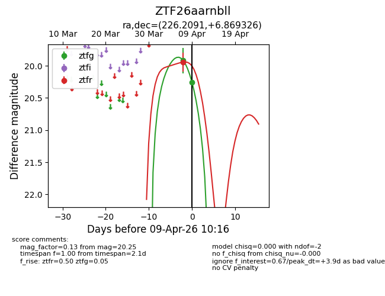
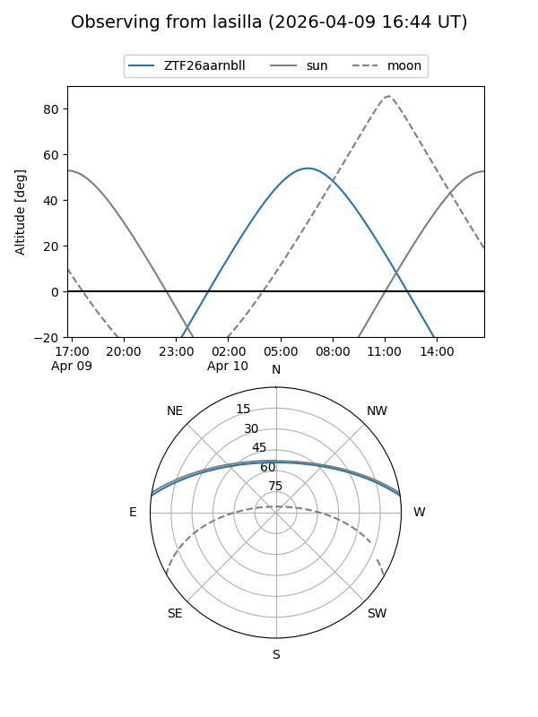
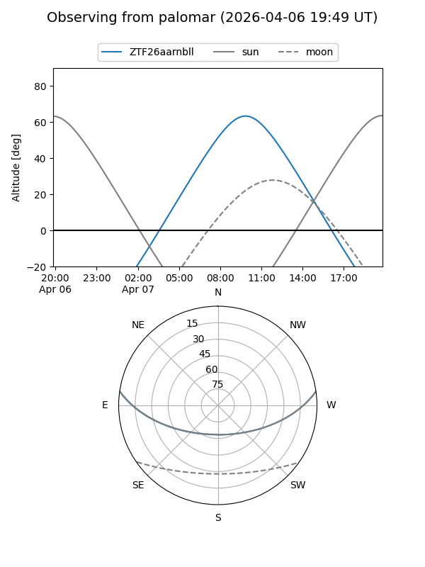
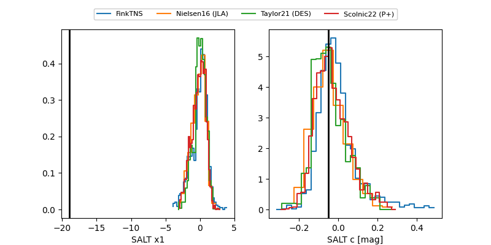

ZTF26aarnbll
Target ZTF26aarnbll at 2026-04-09 10:21
Aliases and brokers:
FINK: link
Lasair: link
ALeRCE: link
alt names
ZTF26aarnbll (ztf,fink_ztf)
Coordinates:
equatorial (ra, dec) = 226.2091,+6.86933
equatorial (HMS+DMS) = 15:04:50.19,+06:52:09.57
galactic (l, b) = (6.4664,+52.43256)
Flags:
Photometry:
last ztfg=20.25, ztfr=19.94
2 ztfg, 1 ztfr detections
Lightcurve

Visibility


Additional plots
